Max
Verstappen


Max Emilian Verstappen was born on 30 September 1997 in Hasselt, Belgium, and races under the Dutch flag for Oracle Red Bull Racing. The son of former Formula One driver Jos Verstappen, he grew up inside the sport—and then rewrote its record books.
In 2015, at just 17 years old, Max became the youngest driver ever to start a Formula One Grand Prix. One year later, in rainy Barcelona, he delivered his first victory—and remains the youngest race winner in the championship’s history. From that afternoon onward, the paddock stopped asking if he would win titles. They started asking how many.
Driving for Red Bull, Max claimed four consecutive World Drivers’ Championships from 2021 to 2024. His racing is defined by ruthless racecraft, late-braking bravery, and an ability to extract pace when others cannot. On track he is uncompromising; off it, calm and precise—the same focus that turned raw talent into a dynasty.
More than a champion, Max Verstappen has become the face of a generation: Pure. Powerful. Relentless. Unstoppable.

Max Emilian Verstappen was born on 30 September 1997 in Hasselt, Limburg, Belgium, and grew up in Maaseik, a small town near the Dutch border. His father, Jos Verstappen, is a Dutch former Formula One race driver who competed for Benetton, Simtek, Footwork, Stewart, Arrows and Minardi; his mother, Sophie Kumpen, was a standout Belgian kart racer. Maternal grandfather Robert Kumpen and relatives such as Anthony Kumpen were long active in endurance racing and NASCAR-related series—motorsport was never a career Max later “chose”; it was the language and daily life that surrounded him from birth. After his parents divorced, Max lived mainly with his father while his sister Victoria stayed with their mother; Jos’s later marriages also brought Max three half-siblings. He holds dual Dutch and Belgian nationality, but races under a Dutch licence and publicly identifies more with the Netherlands, without denying his Belgian family roots. He attended secondary school in Maaseik before switching to private tutoring—by his own account, he often left class early to follow his father to races across Europe. For many children the track is a weekend hobby; for the Verstappen family, the track was life itself.
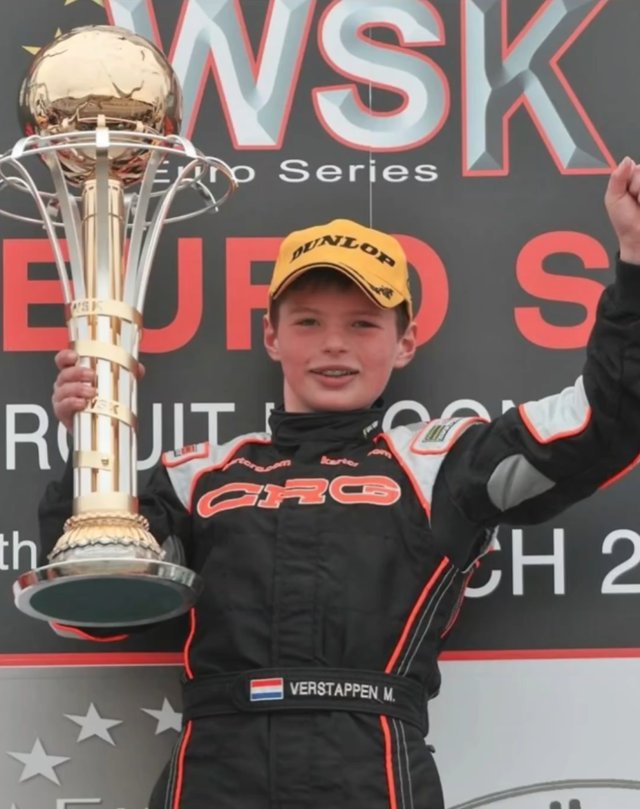
Verstappen started karting around age four and entered championships by about seven, taking his first career win soon after. In 2005–2006 he swept Mini Junior / VAS titles in Limburg, Belgium; in 2007 he stepped up to Rotax Max Mini Max and won both the Belgian Challenge and the Dutch championship. In 2008, racing a CRG entered by his father, he added Belgian Cadet, Belgian Rotax Challenge and Benelux Mini Max crowns. In 2009 he joined CRG customer team Pex Racing, defended his Mini Max titles and won Belgian KF5. Across this phase he all but cleaned out the Benelux junior scene, laying the foundation for the attacking instinct that would define him later. From 2010 he raced as a CRG factory driver on the international stage. That year he finished runner-up in the KF3 World Cup behind Alexander Albon (later a Red Bull teammate), while winning multiple WSK Europa, World Series and Nations Cup events, and beating Dennis Olsen by more than 11 seconds in a wet Bridgestone Cup final. In 2011 he won the WSK Europa Series ahead of Esteban Ocon, but placed only 14th in the European Championship and retired from the World Cup with an electrical failure—while chasing for victory alongside Charles Leclerc. In 2012 he joined Intrepid, won the WSK Master Series and South Garda Winter Cup in KF2, and finished eighth as one of the youngest KF1 World Championship entrants; after leaving Intrepid mid-year and briefly running a Zanardi chassis, he returned to CRG factory and took KF2 World Cup runner-up. 2013 remains one of karting’s most dominant seasons. At just fifteen, Verstappen stepped up to senior KF and KZ (manual gearbox) and in the same year won the CIK-FIA European KF title, European KZ title and KZ World Championship—becoming the first driver to claim both European crowns and a world title in one season, and at the time the youngest KZ world champion (beating Leclerc at Varennes, France). He also won the South Garda Winter Cup, WSK Europa Series (KZ1) and WSK Super Master Series (KZ2); in the KF World Championship he was disqualified for a move on Nicklas Nielsen in the final and finished only third—the sole full campaign he contested that year without a title. By season’s end he was ready for single-seater racing.
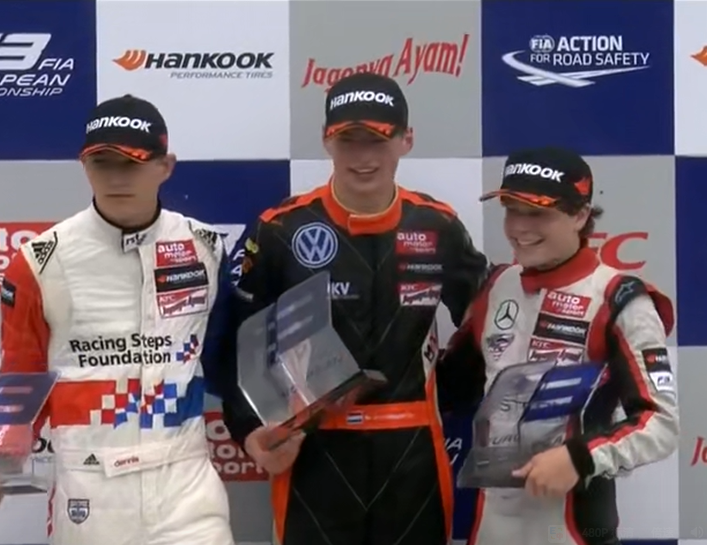
In August 2013 Verstappen first tested a single-seater at Pembrey (Manor MP Formula Renault 2.0), logging about 160 laps over two days; further Renault 2.0 and Formula 3 tests with several teams saw him outpace more experienced drivers. In January 2014 he made his official single-seater debut in the non-championship Florida Winter Series, winning from pole at Palm Beach and edging Nicholas Latifi by 0.004 seconds at Homestead—two wins for the year. For the full season he skipped many of the mid-tier rungs other drivers take and jumped straight into the FIA European Formula 3 Championship with Van Amersfoort Racing. At sixteen he scored ten wins—including a record stretch of six consecutive weekends at Spa and Norisring—and at Hockenheim became one of the youngest F3 pole-sitters and race winners in history; despite eight retirements and one DNS he finished third overall with the most wins of anyone. He also won the Masters of F3 at home in Zandvoort. In August, after a Formula Renault 3.5 test, he joined the Red Bull Junior Team (having also considered a Mercedes junior invitation). Late in the year he ran Friday practice for Toro Rosso at the Japanese Grand Prix, becoming—at about 17 years and 3 days—the youngest driver then to take part in an F1 Grand Prix weekend. From a karting triple crown to an F1 weekend took only one season of single-seaters.
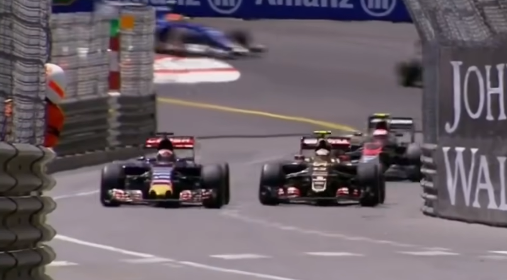
In 2015 Verstappen joined Red Bull’s junior team Scuderia Toro Rosso alongside Carlos Sainz, replacing Jean-Éric Vergne as a full-time driver. At the Australian Grand Prix, aged 17 years and 166 days, he became the youngest race starter in F1 history, breaking Jaime Alguersuari’s near-two-year-old record; he ran in the points before retiring with an engine failure. In Malaysia he qualified sixth and finished seventh, scoring his first points at 17 years and 180 days—also the youngest points scorer on record. He scored consistently all year: fourth in Hungary and the United States were his best finishes. In Monaco he collided at high speed with Grosjean before Ste Devote, hit the wall, took a five-place grid drop, and drew “dangerous driving” criticism from veterans including Massa—an attacking style that thrilled fans and sparked controversy in his rookie year. His pass on Nasr around the outside at Blanchimont in Belgium was later named FIA Move of the Year. He finished 12th in the standings with 49 points; at the FIA Prize Giving he took Rookie of the Year, Personality of the Year and Move of the Year. Producing results week after week in a midfield car at seventeen said more than any defence ever could.
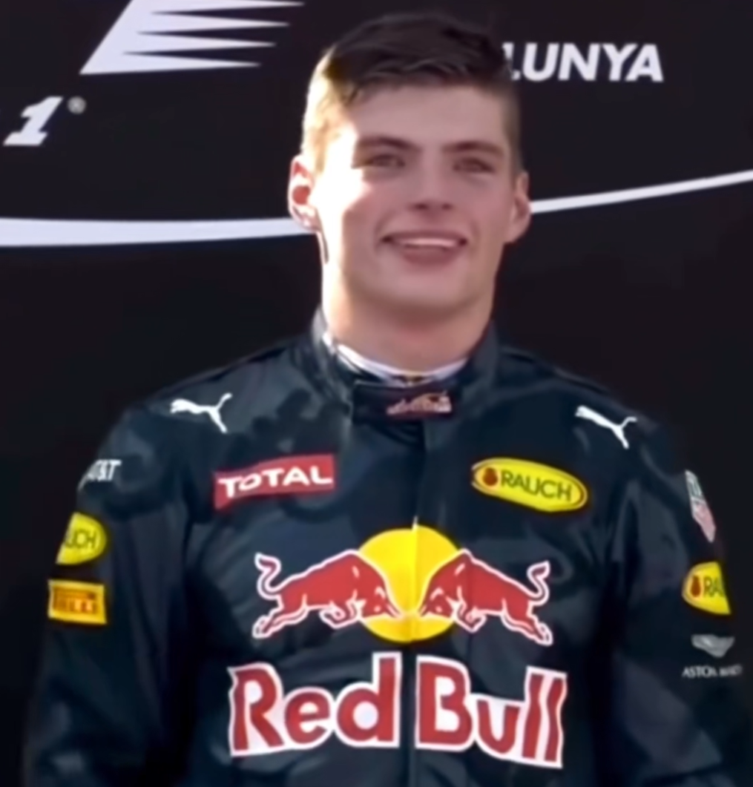
Through the first half of 2016 Verstappen still raced for Toro Rosso with Sainz. He qualified fifth in Australia and finished tenth after colliding while trying to pass his teammate late on; sixth in Bahrain gave Toro Rosso its first points at Sakhir. After Russia, Red Bull promoted him early to the senior team in place of Daniil Kvyat, pairing him with Daniel Ricciardo—Christian Horner called him an “outstanding young talent.” On his Red Bull debut at the Spanish Grand Prix he qualified fourth; after Mercedes teammates Hamilton and Rosberg collided on lap one and both retired, he rose to second. A two-stop strategy let him jump three-stopping Ricciardo for the lead, and he held off Räikkönen to win at 18 years and 228 days—the youngest race winner in F1 history, also resetting youngest podium and youngest lap-leader records previously held by Vettel. In his first eight races at Red Bull he finished in the top five six times, including four podiums. Later, aggressive defence in Belgium drew public criticism from Räikkönen, Vettel and others; Charlie Whiting spoke with him and issued a warning. In October, concerns over “changing direction under braking” led the FIA to ban such defensive moves. The wet Brazilian Grand Prix became legend: after nearly hitting the wall and dropping to 16th following a stop, he carved through to third in the final fifteen laps—Mercedes boss Toto Wolff called it the “Verstappen show” and said “physics is being redefined.” Seven podiums and 204 points left him fifth in the championship—already a senior-team regular in near-rookie clothing.
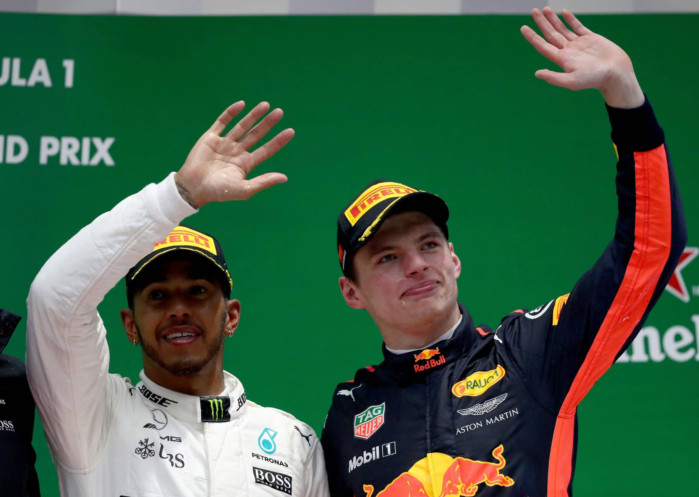
**2017:** Seven retirements in the first fourteen races (four mechanical, three opening-lap collisions); third in China was a rare highlight. The day after his 20th birthday he passed Hamilton to win in Malaysia, finished second in Japan, was demoted to fourth in the USA for an illegal last-lap pass on Räikkönen, then passed Vettel at the start to win again in Mexico. Sixth overall—two wins proved the speed was there; reliability and calm still needed work. **2018:** Nearly every one of the first six rounds brought a crash or mistake—wide tyres and a slide in Australia, a qualifying crash then a collision with Hamilton in Bahrain, a penalty after contact with Vettel in China, a double retirement after colliding with teammate Ricciardo in Azerbaijan, contact with Stroll under VSC in Spain, and a practice crash forcing a rear-grid start in Monaco. Horner and Helmut Marko publicly told him to “stop making these mistakes” and “learn from your teammate.” The turnaround came after Canada (third and fastest lap): second in France, a home-soil fourth career win in Austria, another win in Mexico, and a charge from 18th to second in the USA. In Brazil he led before colliding with Ocon as the latter tried to unlap, finishing second—then shoving Ocon after the race earned two days of community service from the FIA. Eleven podiums, two wins, 249 points and fourth overall—the second-half consistency marked him truly growing up. **2019:** Red Bull switched to Honda power; teammates were Pierre Gasly then Albon. Third in Australia was Honda’s first podium since 2008. A controversial late pass on Leclerc sealed Austria—Honda’s first Grand Prix win since Hungary 2006; another win in the wet in Germany; career-first pole in Hungary (also the first F1 pole for a Dutch driver), leading most of the race before two-stopping Hamilton jumped him for second; pole again in Brazil and two passes on Hamilton in the melee for the win. 278 points, third overall, three wins, nine podiums, two poles—he was Red Bull’s undisputed lead driver. **2020:** In a pandemic-compressed season Mercedes still ruled. Early retirement in Austria with a flywheel/electronics issue; in Hungary he crashed on a wet warm-up lap, yet mechanics fixed the suspension before the start and he still rose from seventh to second. He won the 70th Anniversary Grand Prix at Silverstone from fourth—one of the few non-Mercedes drivers who could regularly threaten that year. Consecutive retirements in Italy and Tuscany cost him second in the standings; a puncture ended Emilia-Romagna. Two wins, eleven podiums, 214 points and third again—missing only a car fast and reliable enough for a title.
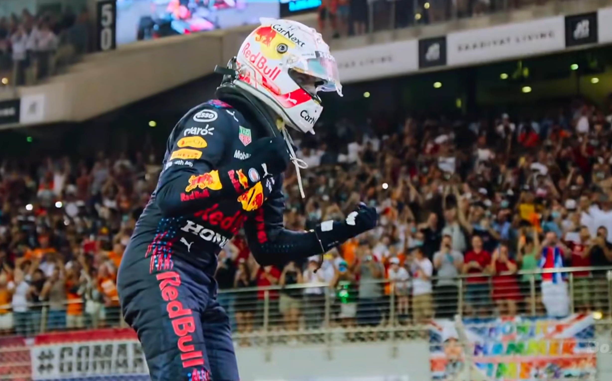
2021 produced one of modern F1’s great title fights. Verstappen and seven-time champion Lewis Hamilton traded blows all year, finished 1–2 fourteen times, and swapped the championship lead five times. He took pole in Bahrain and briefly led before being ordered to give the place back for leaving the track, finishing second; at Imola he jumped Hamilton and teammate Pérez at the start to win; in Monaco, after Leclerc failed to start, he controlled the race and became the first Dutchman to lead the drivers’ standings; a puncture while leading in Azerbaijan sent him into the wall; in France he scored his first career hat-trick (pole, win, fastest lap); back-to-back wins in Styria and Austria included his first grand slam (pole, led every lap, fastest lap, win) and a personal-best three consecutive race weekends. At Silverstone a ~51G opening-lap clash with Hamilton at Copse sent him to hospital; he was discharged that night and raced the next round. Damage from a multi-car start crash in Hungary left him ninth and Hamilton back ahead in the standings. After the summer break, Belgium was red-flagged after only three laps behind the safety car; half points cut the gap to three. At the Dutch home race in Zandvoort he started from pole and held off both Mercedes cars to win; in Russia he still finished second after a power-unit grid drop. Wins in the USA and Mexico City left both men on 369.5 points heading into Abu Dhabi (Verstappen ranked ahead on wins). He took pole in Abu Dhabi but lost the lead at the start. Late on, Latifi’s crash brought out the safety car; race director Michael Masi allowed only the lapped cars between Hamilton and Verstappen to unlap before an immediate restart—a call that sparked lasting controversy. On the final lap, on fresher tyres, Verstappen passed Hamilton at Turn 5 to claim his first World Drivers’ Championship and become the Netherlands’ first F1 world champion. Mercedes’ protest was dismissed and they dropped the appeal. Ten wins, 18 podiums, 10 poles, 395.5 points. From karting kid to world champion—the longest stretch of that road ended that night.
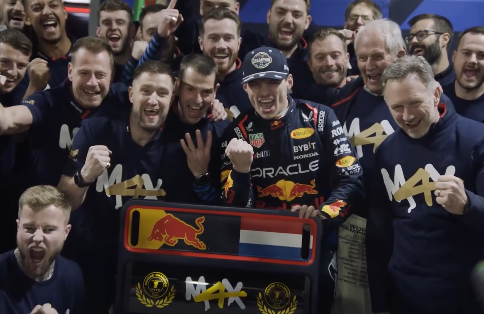
**2022:** As defending champion he switched to car number 1 and signed a five-year Red Bull deal covering 2023–2028. Early retirements in Bahrain and Australia with fuel-system issues left him 46 points behind Leclerc after three rounds—then he seized control: wins in Saudi Arabia, a sprint-inclusive grand slam at Imola, and a streak through Miami, Spain, Azerbaijan and Canada to reclaim the standings lead. Another five-win run from France to Italy included a charge from 14th to victory in Belgium. A shortened Japanese Grand Prix sealed a second title early; another win in Abu Dhabi closed a record 15 victories and 454 points, breaking Hamilton’s 2019 single-season points mark. **2023:** Widely ranked among the most dominant seasons in F1 history. Pole-to-win in Bahrain opened the year; from Miami he strung together ten wins across Monaco, Spain, Canada, Austria, Britain, Hungary, Belgium, the Netherlands and Italy, breaking Vettel’s 2013 nine-race win streak while Red Bull set a constructors’ record of fifteen consecutive wins. Fifth in Singapore ended the run, then he swept the remaining seven. Sprint runner-up in Qatar locked a third title before he won the race. Nineteen wins from 22 races, 12 poles, 21 podiums, 575 points—multiple all-time marks, more than double Pérez in second. **2024:** Another strong start—grand slam in Bahrain, win in Saudi Arabia (career podium No. 100), Japan and China back-to-back, then pole-to-win at Imola to equal Senna’s record of eight consecutive poles. From second in Miami and only sixth in Monaco, RB20’s edge narrowed as McLaren rose. A late collision with Norris in Austria dropped him to fifth after a penalty; battles with Norris in Mexico City brought 20 seconds of penalties and sixth. Brazil was the turning point: an engine grid drop put him 17th; in the wet he passed seven cars on the opening lap, timed stops around red flags perfectly, and after jumping Ocon for the lead stacked fastest laps to win by ~19 seconds—hailed as a modern wet classic, stretching the points lead to 62. Finishing ahead of Norris in Las Vegas sealed a fourth consecutive drivers’ title with two rounds to spare. After another win in Qatar he closed on nine race wins while the team finished only third in the constructors’—the first driver since Piquet in 1983 to take the drivers’ crown for a constructors’ bronze medallist.
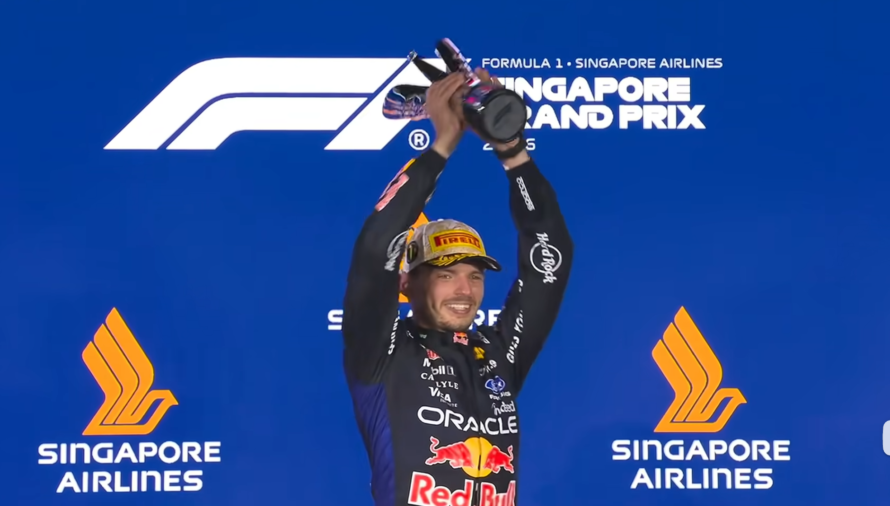
As Formula One entered a new technical era, Verstappen stayed with Red Bull (power unit partner Red Bull Ford), alongside French rookie Isack Hadjar. With the FIA allowing a permanent number change before 2026, he declined a return to 33 and took number 3. The first half of the season was uneven: after a qualifying crash in Australia he fought to sixth in the race; China yielded no points in sprint or race, with an engine retirement in the Grand Prix; after eighth in Japan he told the BBC he was considering retirement after 2026. A front-row start in Monaco ended in a lap-one power-unit retirement; a crash on lap 48 at Silverstone brought out the safety car; another opening-lap crash ended the Dutch home race. Still he podiumed in Canada, Austria and Belgium, rose from eighth to second in Azerbaijan (0.196 seconds behind Russell), and with Hadjar delivered Red Bull’s first double podium since China 2024. In August 2026 he re-signed with Red Bull through 2030, calling the team a “second home” and quieting exit speculation. Form returned at the Bahrain Grand Prix—relocated to Sepang International Circuit in Malaysia—where he took his first pole and win of the year ahead of Antonelli and Hamilton, his first victory under the new rules. At Singapore he then swept sprint pole, sprint win, Grand Prix pole and race win—conquering Marina Bay for the first time and lifting his career Grand Prix tally to 73. The legend continues.
Click to open · Scroll to explore
“Honestly, being at home. Having fun with family, friends, and playing sports.”
Between race weekends, Max swaps the cockpit for quieter rituals: padel with friends, late-night FIFA sessions, and hours on the simulator with his Team Redline crew. At home he trains hard, then slows down with Jimmy and Sassy—proof that the fiercest driver on the grid still lives for the small, human moments.
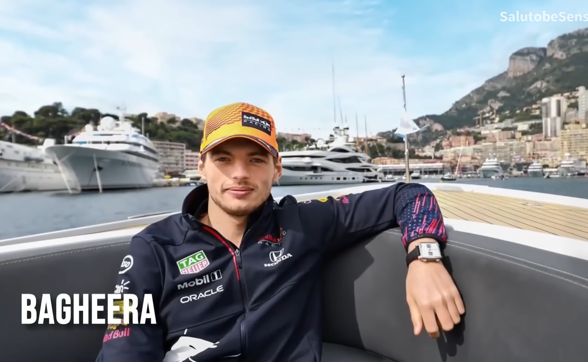
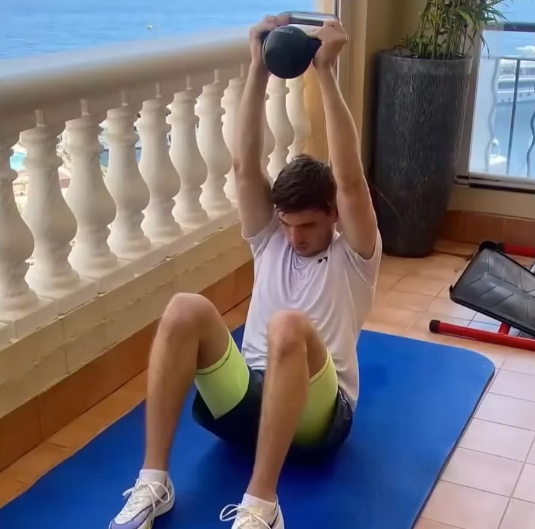
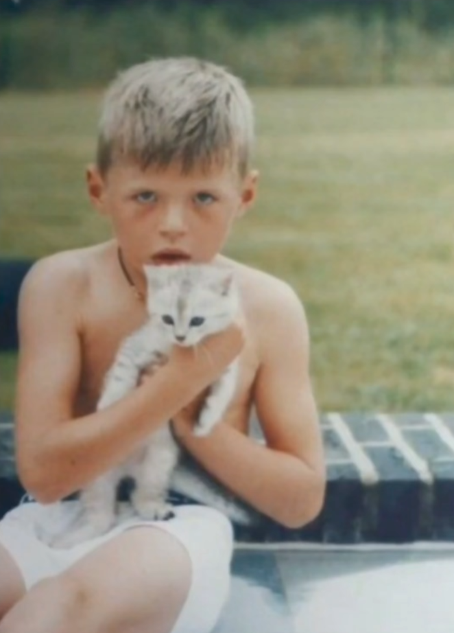
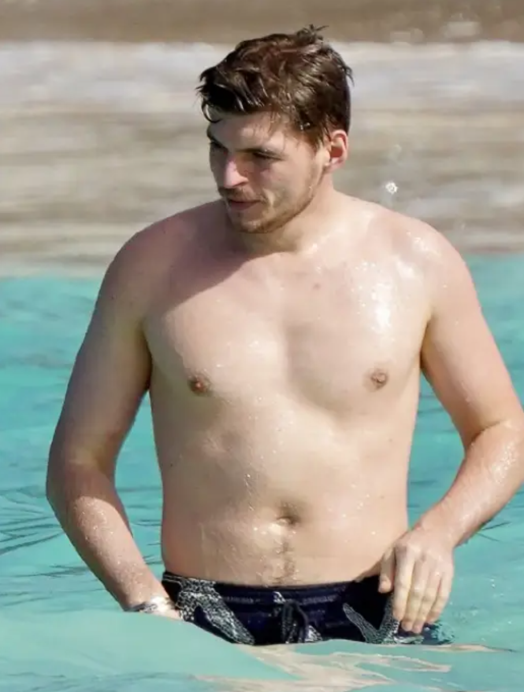